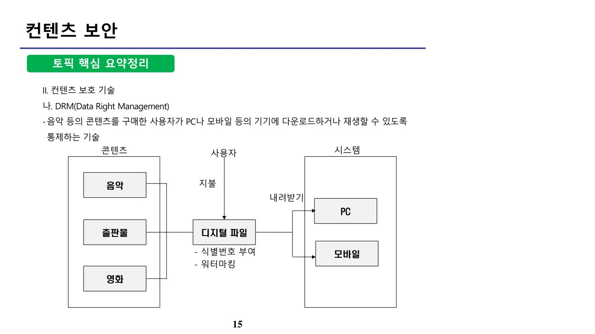

1. 메일 보안 (원본 p.1-6)
메일 서비스란 인터넷 등의 통신망을 통해 주고받는 우편 방식으로, 전자우편·이메일(e-mail)이라고도 한다. 메일 보안 위협은 크게 비인가자가 주고받는 메일 내용을 가로채거나 조작하는 이메일 도청·변조와, 악의적인 사이트 접근을 유도하거나 악성 파일을 첨부해 전송하는 악성코드 감염 메일(사회공학적 공격)로 구분된다. 이러한 위협에 대응하기 위한 대표적인 메일 암호화 프로토콜이 PGP와 S/MIME이다.
가. PGP(Pretty Good Privacy)
1991년 Phil Zimmermann이 개발한 대표적 전자우편 보안 도구로, 별도의 인증기관(CA) 없이 사용자 간 신뢰(Web of Trust)를 기반으로 동작하는 것이 특징이다.
나. S/MIME(Secure/Multipurpose Internet Mail Extension)
인증서를 통해 인증, 메시지 무결성, 부인방지, 데이터 기밀성 등 메일 보안 서비스를 제공하는 프로토콜로, 어플리케이션 계층에서 동작하며 X.509 인증서를 사용한다.
| 항목 | PGP | S/MIME |
|---|---|---|
| 표준 형식 | 자체 정의 | X.509, PKCS#7 |
| 제공 서비스 | 기밀성, 메시지인증, 사용자인증, 송신부인방지 | 기밀성, 무결성, 인증, 부인방지 |
| 암호 알고리즘 | 공개키: RSA, Diffie-Hellman, DSA 대칭키: CAST, IDEA, 3DES | 공개키: RSA, Diffie-Hellman 대칭키: RC2, 3DES |
| 공인인증서 필요 여부 | 불필요 | 필요 |
PGP는 전자우편 메시지의 비밀성을 위해 전자서명 된 메시지에 대칭키 암호화를 수행할 때 세션키를 사용하며, 인증 기능을 위해서는 메시지의 해시 값을 생성한 뒤 송신자의 개인키로 전자서명을 생성한다. 다만 세션키 자체는 수신자의 공개키로 암호화하여 전송해야 하며, 송신자의 개인키로 세션키를 서명·전송한다는 서술은 잘못된 설명이다.
S/MIME은 어플리케이션 계층에서의 보안을 제공하며(네트워크 계층이 아님), 평문 메시지에 공개키 암호방식을 적용해 보안성을 제공하고, 이진값으로 암호화된 본문·서명 부분은 모두 MIME 형식으로 변환되어 전송된다. 세션키 분배에는 Diffie-Hellman 방식과 RSA 공개키 방식이 사용된다.
S/MIME은 암호처리 외에도 부가적인 보안 서비스로 서명된 수령증(Signed Receipts), 보안 레이블(Security Labels), 안전한 메일링리스트(Secure Mailing Lists) 등을 제공한다. 신뢰망(Web of Trust)은 PGP의 인증 방식이며, S/MIME은 이와 달리 공인 인증기관을 통한 공개망(계층적 신뢰구조) 방식을 사용한다.
2. 데이터베이스 보안 (원본 p.7-12)
가. 데이터베이스 보안 요구사항
| 보안 요구사항 | 설명 | 보안 통제 |
|---|---|---|
| 추론 방지 | 간접적으로 노출된 데이터를 통해 다른 데이터를 추론하여 공개되는 것을 방지 | 추론 통제 |
| 데이터 무결성 | 데이터베이스 내 자료가 잘못된 갱신 또는 비인가된 변조로부터 보호됨 | 접근 통제 |
| 사용자 인증 | 접근한 사용자가 정당한 사용자인지 확인 및 허가 | - |
| 감사(Audit) | 데이터베이스에서 일어나는 행위를 기록하여 정당한 사용자가 정당한 작업을 수행했는지 파악 | 흐름 통제 |
데이터베이스 보안 통제는 크게 추론 통제(Inference Control), 접근 통제(Access Control), 흐름 통제(Flow Control)로 구분되며, 일반적인 위험 관리(Risk Control)는 DB 보안 통제의 고유 분류 항목이 아니다.
나. 데이터베이스 암호화 방법
| 방법 | API 방식 | 플러그인(Plug-In) 방식 |
|---|---|---|
| 설명 | 외부 어플리케이션 영역에서 암·복호화 수행 | DBMS 자체에 암·복호화 모듈 설치 |
| 장점 | 데이터베이스 서버에 부하 없음 | 그래픽 기반 인터페이스로 관리 편의성이 높고 검색 용이 |
| 단점 | 데이터베이스 내부 레벨에서는 별도 API 모듈이 필요하며, 애플리케이션 전체 수정이 필요 | 데이터베이스 서버에 부하 발생 |
즉 API 방식은 DB 성능 저하가 없다는 장점이 있으나 애플리케이션의 전체적인 수정이 필요하다는 특징이 있으며, 반대로 Plug-In(Kernel) 방식은 DBMS 자체에 보안 모듈을 두므로 DB 성능이 저하될 수 있다.
다. 데이터베이스 감사(Audit)
데이터베이스 감사는 서버의 설정·운영과 관련된 정보 변경, 객체 생성 및 변경 내역, 주요 데이터의 조회·이동 내역 등을 수집·기록하여 정당한 사용자의 정당한 작업 여부를 추적한다. 다만 데이터베이스 암호화 키 자체는 감사에서 수집하는 대상 정보가 아니라 별도로 안전하게 관리되어야 할 보안 자산이다.
3. 컨텐츠 보안 (원본 p.13-22)
컨텐츠 보안이란 불법 복제 등의 저작권 침해로부터 디지털 컨텐츠(이미지, 영상, 출판물 등)를 보호하는 것으로, 대표적인 보호 기술로는 워터마킹, 핑거프린팅, DRM이 있다.
가. 워터마킹 vs 핑거프린팅
| 항목 | 워터마킹(Watermarking) | 핑거프린팅(Fingerprinting) |
|---|---|---|
| 목적 | 불법 복제 방지 | 불법 유통 방지 |
| 삽입 정보 | 저작권 정보 | 저작권 정보 + 구매자 정보 |
| 컨텐츠 변환 시점 | 최초 저작 시점 | 구매 시점마다 |
| 장점 | 많은 정보 삽입 가능, 공모공격이 어려움 | 변조·변형·손실압축에 강함, 품질 저하가 거의 없음 |
| 취약점 | 불법 유통에는 취약 | 공모공격에는 취약 |
디지털 워터마킹은 사진·오디오·동영상 등 디지털 미디어에 저작권 정보와 같은 비밀 정보를 삽입해 관리하는 기술로, 저작권 보호·위조 및 변조 여부 판별·불법 복제 추적 등에 사용된다. 전자 코드북(ECB)은 블록암호 운영모드의 하나이고, 풋프린트(footprint)는 디지털 흔적을 의미할 뿐 저작권 삽입 기술이 아니므로 워터마킹과 혼동하지 않도록 주의한다.
나. DRM(Digital Rights Management)
DRM은 음악 등의 콘텐츠를 구매한 사용자가 PC나 모바일 등의 기기에서 다운로드하거나 재생할 수 있도록 통제하는 기술이다. 콘텐츠(음악·출판물·영화)는 디지털 파일로 변환되며 이 과정에서 식별번호 부여 및 워터마킹이 적용되고, 사용자가 지불을 완료하면 PC·모바일 등 시스템으로 내려받기가 가능해진다.

DRM의 요소 기술에는 메타데이터(저자·저작권자·발행일 등 저작권 관리에 필요한 데이터 구조와 정보), 패키징(시큐어 콘테이너를 구성하는 과정), 사용자 인증·디바이스 인증(또는 이 둘을 결합한 인증) 등이 있다. 권리 표현 언어(REL)로는 XrML, ODRL, SRDL, XMCL 등이 사용되며, DOI·MPEG-21·D11은 권리 표현 언어가 아니라 각각 식별자·표준·기타 규격에 해당하므로 구분해야 한다.
다. 모바일 보안
| 방안 | 설명 |
|---|---|
| AP 관리 | 사전에 등록한 기기만 접근을 허용하며 PC 영역과 분리 |
| 네트워크 접근제어(NAC) | 허가된 기기가 일정 수준 이상의 보안 정책을 만족해야 내부망 접근을 허가 |
| 디바이스 관리(MDM) | Mobile Device Management — 모바일 기기의 설정·정책·원격 제어를 통합 관리 |
| 디바이스 가상화 | 개인 사용 영역과 업무용 영역을 구분 |
| PC 연결 제어 | 모바일-PC 간의 연결을 통제 |
| 사용자 교육 | 모바일 기기를 통한 정보 유출·악성코드 확산 사례 및 준수사항 교육 |
모바일 오피스 환경에서 BYOD(Bring Your Own Device) 서비스 제공을 위한 대표적인 보안 강화 기술은 NAC(허가된 기기가 일정 보안수준을 만족할 때만 접근 허용)와 MDM(모바일 기기 통제)이다. 또한 마켓에서 유통되는 애플리케이션의 보안성 검증과 개발자 신원 확인·인증을 강화하기 위한 기술로 코드 서명(Code Signing)이 사용된다.
PC 사용자를 가짜 사이트로 유도해 개인정보를 불법 수집하는 공격은 파밍(Pharming)이다. 피싱(Phishing)이 이메일 등으로 사용자를 속여 가짜 사이트로 유인하는 것과 달리, 파밍은 DNS 조작 등으로 정상 URL 입력 시에도 자동으로 가짜 사이트에 접속되도록 하는 것이 특징이다.
4. 포렌식 (원본 p.23-32)
포렌식(Forensics)이란 법정 제출을 위해 디지털 증거 자료를 수집·분석하는 기술로, 효력을 인정받기 위해서는 원칙과 절차를 준수하여 증거를 취급하는 것이 무엇보다 중요하다.
가. 포렌식의 5대 원칙
| 원칙 | 설명 |
|---|---|
| 정당성 | 정당한 도구를 사용해 적법한 절차에 따라 증거를 획득해야 함 |
| 재현 | 동일한 환경에서 동일한 결과를 낼 수 있도록 재현 가능해야 함 |
| 신속성 | 증거 훼손을 최소화하기 위해 최대한 빠른 시간 내에 수집 |
| 연계보관성(Chain of Custody) | 수집된 증거가 이송·분석·보관되어 법정에 제출되기까지의 전 과정이 추적 가능해야 함 |
| 무결성 | 증거가 법정에 제출되는 과정에서 위·변조되어서는 안 됨 |
증거는 조사용 컴퓨터에 원본 하드디스크를 직접 마운트하는 것이 아니라 복제본을 마운트하여 조사해야 한다. CAAT(Computer Aided Audit Technique)는 감사 자동화 도구이고 MRTG(Multi Router Traffic Grapher)는 네트워크 관리 도구로, 둘 다 포렌식 증거 수집의 적절한 방법은 아니다. 법적 효력을 갖는 증거를 수집하는 가장 적절한 방법은 피의자의 PC를 수거해 송수신 이메일 등을 직접 분석하는 것이다.
나. 포렌식 절차
① 수사준비(팀 구성, 도구 준비, 수사 계획) → ② 증거수집(현장에서 휘발성·비휘발성 증거 획득) → ③ 보관 및 이동(훼손되지 않도록 증거물 포장·운반) → ④ 분석(수집한 증거를 상세히 조사) → ⑤ 보고서 작성 순으로 진행한다.
다. 휘발성 데이터와 비휘발성 데이터
| 구분 | 설명 |
|---|---|
| 휘발성 증거 | 실시간으로 변화하거나 시스템 종료 시 사라지는 데이터. 예: 시간정보, 로그온 사용자 정보, 클립보드 데이터, 프로세스 정보 등 |
| 비휘발성 증거 | 전원이 종료되어도 보존되는 데이터. 예: 파일, 로그 |
휘발성 증거의 수집은 소실 가능성이 높은 순서대로 우선순위를 두며, 레지스터와 캐시 → 시스템 메모리의 내용 → 임시 파일시스템 → 디스크의 데이터 순으로 수집한다.
📚 전체 기출·예상문제 (15문항) — 원문 수록
본 강좌 원본 PDF에 수록된 기출·예상문제를 문항별로 재구성했습니다. 원본에는 한 페이지에 서로 다른 문제가 뒤섞여 추출되어 있던 부분을 분리했으며, 문항별 정답은 원문의 O/X 해설과 대조하여 검증했습니다.